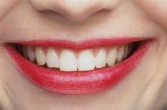

건강한 치아는 건강한 인생의 시작
양치는 단순한 습관이 아니라 미래의 나를 위한 투자입니다.
치아는 한 번 손상되면 회복이 어려워요. 따라서 어릴 때부터 올바른 양치 습관을 갖는 것이 정말 중요합니다.
이 웹사이트에서는 양치의 다양한 중요성과 실천 방법을 알려드리겠습니다.
- ✅ 하루 3번 양치하면 충치 예방 효과
- ✅ 잇몸병 예방으로 전신 건강까지
- ✅ 입 냄새 걱정 없는 자신감 있는 미소

밝은 미소의 시작은 올바른 양치에서!